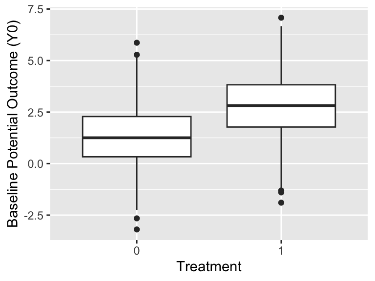
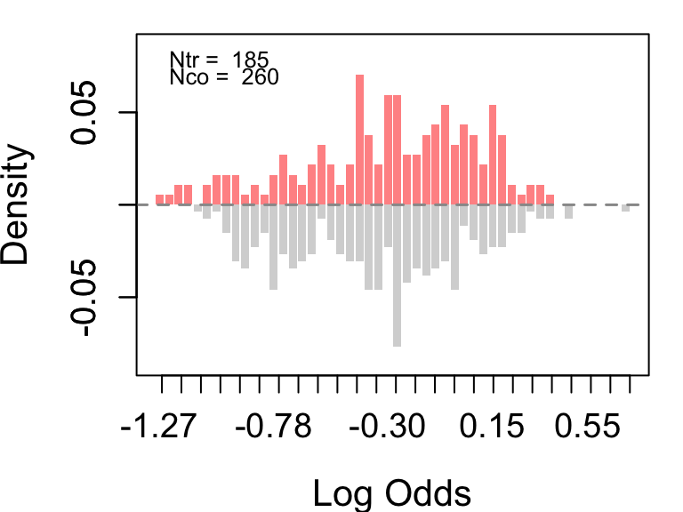
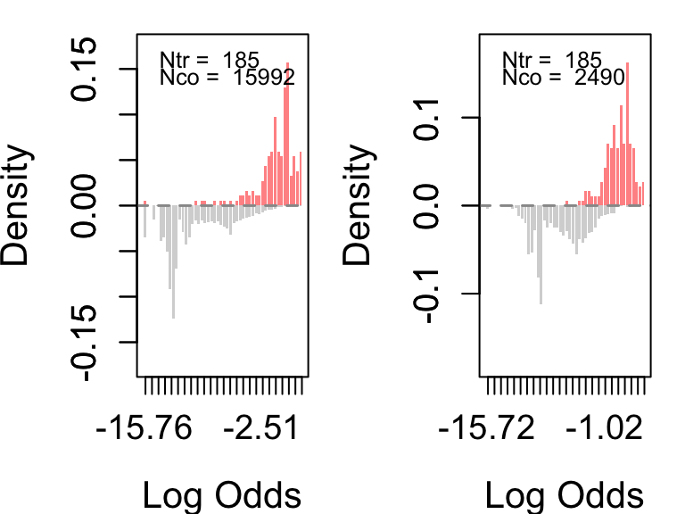

knitr::opts_chunk$set(fig.width=4, fig.height=3)
# install.packages(c('tidyverse', 'here'))
library(tidyverse)
library(here)
df <- readr::read_tsv("./full_potential_outcomes.tsv")Causal Inference Lab One
Setup
- Download the file
full_potential_outcomes.tsv - Move the file to a “lab 1” folder on your own computer
- Install the
tidyverseandhereR packages if you don’t already have them
The data contains the following columns:
- Potential Outcomes:
y0andy1 - Observed Outcome:
y - Treatment:
t.
df %>% head() # A tibble: 6 × 8
x1 x2 x3 y0 y1 t y t2
<dbl> <dbl> <dbl> <dbl> <dbl> <dbl> <dbl> <dbl>
1 0.935 2.45 0.0717 3.34 4.84 1 4.84 1
2 0.824 3.90 -0.374 1.82 2.28 1 2.28 0
3 0.983 2.22 0.370 4.21 3.45 1 3.45 1
4 0.230 0.522 0.881 1.21 0.685 0 1.21 0
5 0.648 2.44 0.503 2.25 3.26 1 3.26 0
6 0.948 0.710 0.704 6.43 9.11 1 9.11 1Lab Demonstration:
- How does the observed outcome
yrelate to the treatmenttand the potential outcomesy0andy1?
df %>% select(y0, y1, t, y) %>% tail# A tibble: 6 × 4
y0 y1 t y
<dbl> <dbl> <dbl> <dbl>
1 1.74 2.33 0 1.74
2 1.92 2.73 1 2.73
3 1.38 0.432 1 0.432
4 1.66 1.97 0 1.66
5 0.744 0.470 1 0.470
6 1.17 -0.543 1 -0.543- Calculate the difference in means between the treated and the untreated.
mean(filter(df, t == 1)$y) - mean(filter(df, t == 0)$y)[1] 2.387075- Calculate the true global average treatment effect
mean(df$y1 - df$y0)[1] 0.9567962- Explain why they are different. Show this using R.
# Treatment assignment is correlated with potential outcomes at baseline
# This means treated and control units are not comparable
cor(df$t, df$y0)[1] 0.4413092cor(df$t, df$y1)[1] 0.3615157# We can visualize this: treated units have higher baseline potential outcomes
df %>% ggplot(aes(x = factor(t), y = y0)) +
geom_boxplot() +
labs(x = "Treatment", y = "Baseline Potential Outcome (Y0)")
- What is the ATE vs the ATC and ATT? How would we calculate these from the science?
# ATE (Average treatment effect - for everyone)
mean(df$y1 - df$y0)[1] 0.9567962## Same thing with fancy code
with(df, mean(y1) - mean(y0))[1] 0.9567962# ATC (Average treatment on control)
mean(filter(df, t==0)$y1 - filter(df, t==0)$y0)[1] 0.9809233with(filter(df, t==0), mean(y1) - mean(y0))[1] 0.9809233# ATT (Average treatment on treated)
mean(filter(df, t==1)$y1 - filter(df, t==1)$y0)[1] 0.9302361with(filter(df, t==1), mean(y1) - mean(y0))[1] 0.9302361In-Lab Assignment
Do the next part in pairs. Prepare your work using RMarkdown.
Fixing the ATE estimation
- You get to play omnipotent being! Create an alternate universe (ie, a new treatment assignment and new outcome variable) such that the difference in means between the treated and the untreated can be reliably estimated.
- Estimate the difference in means and compare it to the true effect.
- Are they different? Why/How?
# Sample treatment assignment independently of potential outcomes
set.seed(123)
df$t_random <- sample(c(0, 1), nrow(df), replace = TRUE)
# Create observed outcome under this new treatment assignment
df$y_random <- ifelse(df$t_random == 1, df$y1, df$y0)
# Verify treatment is now independent of baseline potential outcomes
cor(df$t_random, df$y0)[1] -0.113629cor(df$t_random, df$y1)[1] -0.1075407# Correlations closer to zero but not exactly zero due to random sampling variability, sampling a finite number of units can lead to some random correlation.
# Difference in means under random assignment
diff_in_means <- mean(df$y_random[df$t_random == 1]) - mean(df$y_random[df$t_random == 0])
diff_in_means[1] 0.5602665# Compare to true ATE
true_ate <- mean(df$y1 - df$y0)
true_ate[1] 0.9567962# They should be close because treatment is now independent of potential outcomesConditional Independence
- Create an alternate universe where the difference in means between treatment and control can only be reliably estimated after conditioning on another variable.
- Create a confounder variable
xthat is related to both treatment assignment and potential outcomes. - Show that the naive difference in means is biased.
- Show that after conditioning on
x, the difference in means within each stratum provides an unbiased estimate of the ATE.
set.seed(123)
df$x <- df$y0 + rnorm(nrow(df), 0, 0.5) # confounder related to baseline potential outcomes by adding noise
df$t_confound <- ifelse(df$x > median(df$x), 1, 0)
## Posibility to use a probabilistic treatment assignment instead of deterministic and scale x to make it more realistic
# df$x <- scale(df$y0 + rnorm(nrow(df), sd = 0.5))[,1]
# p <- plogis(1.2 * df$x) # treatment depends on x (probabilistic is nicer than deterministic)
# df$t_confound <- rbinom(nrow(df), 1, p)
df$y_confound <- ifelse(df$t_confound==1, df$y1, df$y0)
# Treatment is now dependent of baseline potential outcomes
cor(df$t_confound, df$y0)[1] 0.7794117cor(df$t_confound, df$y1)[1] 0.6637943naive_diff <- with(df, mean(y_confound[t_confound==1]) - mean(y_confound[t_confound==0]))
true_ate <- mean(df$y1 - df$y0)
naive_diff[1] 3.531259true_ate[1] 0.9567962# They should be different because treatment is now confounded with x
# Now condition on x by stratifying
# Create strata of x (quintiles)
df$stratum <- cut(
df$x,
breaks = quantile(df$x, probs = seq(0, 1, 0.2)),
include.lowest = TRUE
)
# Within-stratum difference in means (only where both groups exist)
stratum_effects <- df %>%
dplyr::group_by(stratum) %>%
dplyr::summarise(
n = dplyr::n(),
n_treat = sum(t_confound == 1),
n_ctrl = sum(t_confound == 0),
diff = ifelse(
n_treat > 0 & n_ctrl > 0,
mean(y_confound[t_confound == 1]) - mean(y_confound[t_confound == 0]),
NA_real_
),
.groups = "drop"
)
stratum_effects# A tibble: 5 × 5
stratum n n_treat n_ctrl diff
<fct> <int> <int> <int> <dbl>
1 [-2.42,0.492] 200 0 200 NA
2 (0.492,1.54] 200 0 200 NA
3 (1.54,2.51] 200 100 100 1.39
4 (2.51,3.49] 200 200 0 NA
5 (3.49,7.42] 200 200 0 NA # Weighted average of stratum diffs (dropping NA strata)
adj <- with(stratum_effects, weighted.mean(diff, w = n, na.rm = TRUE))
adj[1] 1.386457# Using regression to adjust for x with complete data
coef(lm(y_confound ~ t_confound + x, data=df))["t_confound"]t_confound
1.040072 Lalonde Dataset
- Load the
lalondedataset from Imbens & Wu, (2025). The complete replication package from the paper is available here and an additional tutorial developed be the authors can be found here. - Estimate the difference in means between the treated and the untreated for the outcome variable
re78. Compare this benchmark to the ATE estimates obtained using regression adjustment with the covariates. - Assess the overlap between the treated and the untreated in the experimental dataset and the two non-experimental datasets (control groups from CPS1 and PSID1). What do you observe? What are the implications for estimation?
- Discuss the assumptions required for regression adjustment to provide an unbiased estimate of the ATE. Do you think these assumptions are likely to hold in the experimental dataset? What about the non-experimental datasets?
# Load the Lalonde dataset
load("./lalonde.RData")
# Import functions from GitHub
source("https://github.com/xuyiqing/lalonde/blob/main/tutorial/functions.R?raw=TRUE")Loading required package: MASS
Attaching package: 'MASS'The following object is masked from 'package:dplyr':
select##
## Matching (Version 4.10-15, Build Date: 2024-10-14)
## See https://www.jsekhon.com for additional documentation.
## Please cite software as:
## Jasjeet S. Sekhon. 2011. ``Multivariate and Propensity Score Matching
## Software with Automated Balance Optimization: The Matching package for R.''
## Journal of Statistical Software, 42(7): 1-52.
##hbal: Hierarchically Regularized Entropy Balancing, v.1.2.15
Report bugs -> yiqingxu@stanford.eduWarning: package 'CBPS' was built under R version 4.4.3Loading required package: MatchIt
Attaching package: 'MatchIt'The following object is masked from 'package:hbal':
lalondeLoading required package: nnetLoading required package: numDerivLoading required package: glmnetLoading required package: Matrix
Attaching package: 'Matrix'The following objects are masked from 'package:tidyr':
expand, pack, unpackLoaded glmnet 4.1-10CBPS: Covariate Balancing Propensity Score
Version: 0.24
Authors: Christian Fong [aut, cre],
Marc Ratkovic [aut],
Kosuke Imai [aut],
Chad Hazlett [ctb],
Xiaolin Yang [ctb],
Sida Peng [ctb],
Inbeom Lee [ctb]Warning: package 'mlr3learners' was built under R version 4.4.3Loading required package: mlr3Warning: package 'mlr3' was built under R version 4.4.3See details in:Carlos Cinelli and Chad Hazlett (2020). Making Sense of Sensitivity: Extending Omitted Variable Bias. Journal of the Royal Statistical Society, Series B (Statistical Methodology).# Select covariates for adjustment
covar <- c("age", "education", "black", "hispanic", "married",
"nodegree", "re74", "re75", "u74", "u75")
# Estimate the difference in means (experimental benchmark without adjustment)
diff(ldw, "re78", "treat") Estimate Std. Error CI Lower CI Upper
1794.3424 670.8245 475.9486 3112.7362 # Estimate the ATE using regression adjustment
reg(ldw, "re78", "treat", covar) # Experimental dataset Estimate Std. Error CI Lower CI Upper
1670.7088 680.2010 333.8025 3007.6151 reg(ldw_cps, "re78", "treat", covar) # Non-experimental dataset (control group from CPS1) Estimate Std. Error CI Lower CI Upper
1066.3763 626.8479 -162.3150 2295.0677 reg(ldw_psid, "re78", "treat", covar) # Non-experimental dataset (control group from PSID1) Estimate Std. Error CI Lower CI Upper
4.157964 854.148868 -1670.704293 1679.020220 # Overlap
ldw_ps <- assess_overlap(data = ldw, treat = "treat", cov = covar)-1.310867 0.7158619
par(mfrow = c(1,2))
ldw_cps_ps <- assess_overlap(data = ldw_cps, treat = "treat", cov = covar)-16.1181 1.787343ldw_psid_ps <- assess_overlap(data = ldw_psid, treat = "treat", cov = covar)-16.1181 3.752723
# The experimental dataset should show good overlap between treated and control units across covariates, while the non-experimental datasets may show poor overlap (e.g., treated units may have higher education or income than controls).
# Poor overlap can lead to biased estimates of the ATE because it relies on extrapolation outside the support of the data.
# Regression adjustment assumes that all confounders are measured and correctly modeled, which may be more plausible in the experimental dataset than in the non-experimental datasets where selection bias is likely present.
# Overlap gains with non-experimental datasets and modern adjustment methods (e.g., matching, weighting) that can be explored in future labs.
# Check sections 2.3 and 2.4 from tutorial for more details on this topic.